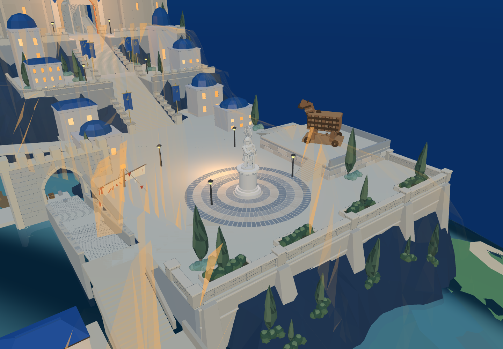
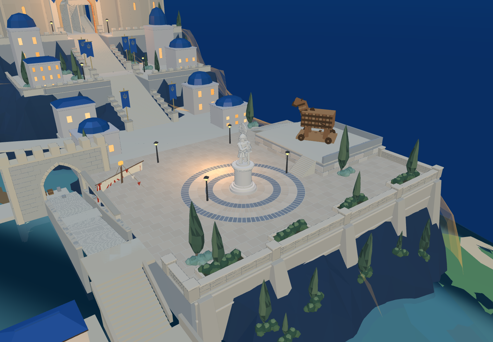
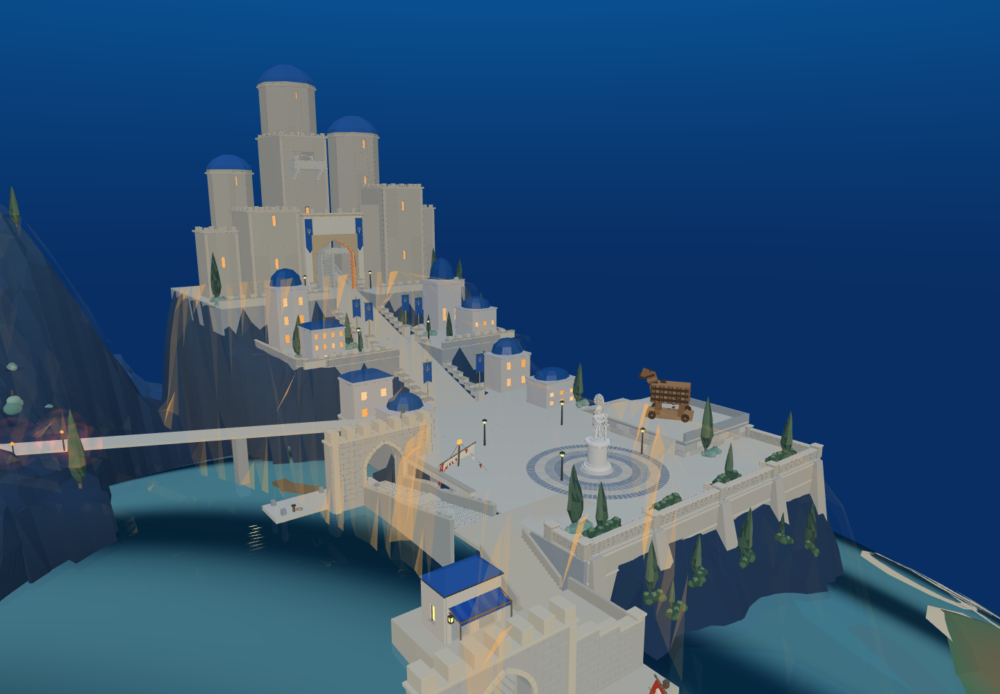
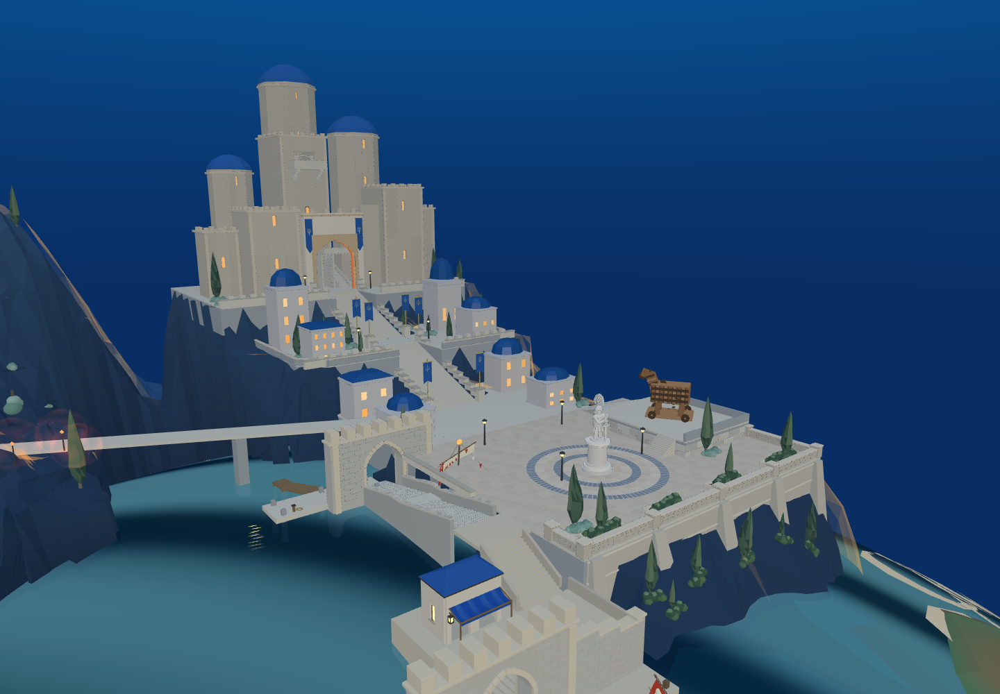
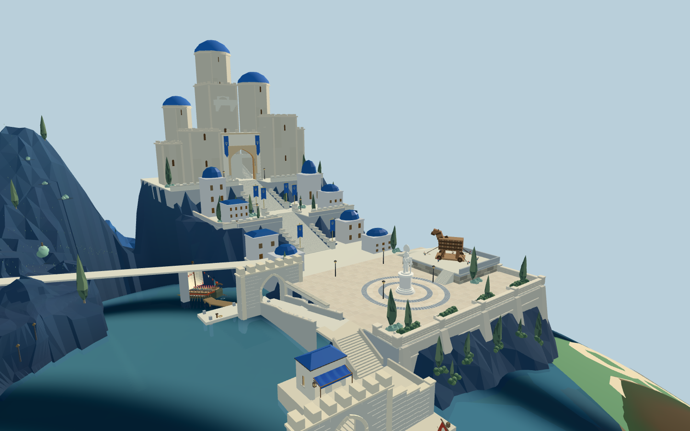
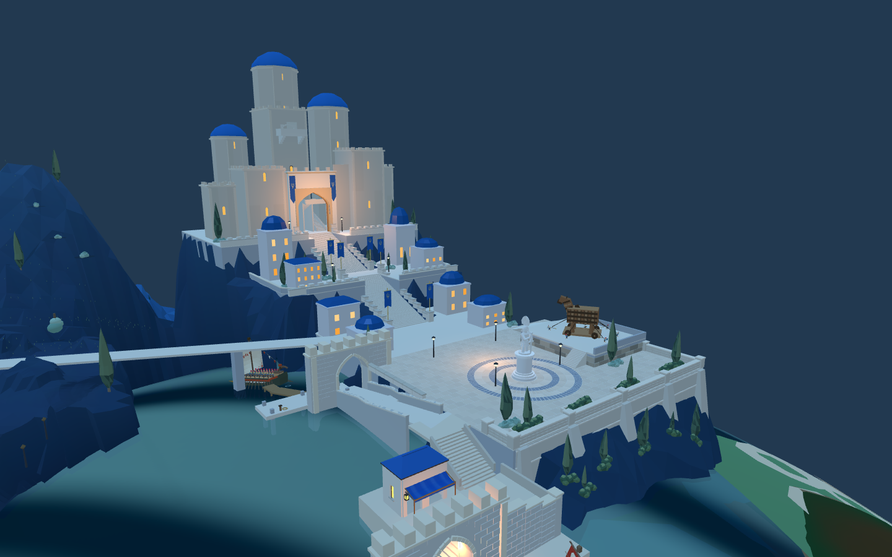

重点已回到带雕塑的新城。此轮已进入 8931 原游戏 并同步同一 Godot 工程。以下实景不是生成图。



保留六圈环砖、原圆台雕像、原木马和独立台阶；增加外围错缝石砖，避开木马台、台阶和出场坡道。铺装仍为一个绘制对象。修正山体轮廓高光穿过新城建筑的金色三角形。




Godot 远景铺装的主要颗粒感已修正：线性顶点颜色适配 Compatibility 渲染，并启用 4× 多重采样。没有用抬高地面掩盖问题。新城整体仍未视觉验收。
本轮没有扩大广场实体、重新缩放主堡或改变木马台高度，不能算新城整体完成。目标中的台地与主堡更紧凑、下层临水墙更厚重，植物与驻军更充实；现有城门前长阶梯、孤立高塔、门后平台与海岸高差仍需按目标继续调整。目标与实景摄影角度尚未完全匹配，不作像素级相似度结论。